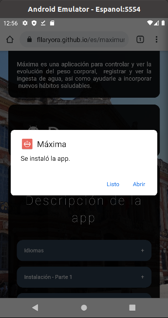

Para poder instalar la apk desde el navegador, se debería
poder aceptar apks de origen desconocido con los siguientes pasos:
Ir a Ajustes.
Apps y notificaciones.
Opciones avanzadas.
Acceso especial de apps.
Scrollear de ser necesario.
Instalar apps desconocidas
Seleccionar Chrome.
Dejar el toggle de "Confiar en esta fuente" activado en color azul.
Para poder instalar la apk desde el navegador, se debería
poder aceptar apks de origen desconocido desde play protect:
Ir a Descargar.
Desde el pop-up de abajo. Ir a Abrir.
Desde dialogo. Ir a Instalar.
Desde dialogo de play protect. Ir a Instalar de todas formas.
Desde dialogo. Ir a Listo.

Dentro de la app se cuentan con 4 secciones principales:
-Próxima actividad -Mediciones -Planificación -Desempeño
Paso a explicar cada una de ellas:
Próxima actividad
En este panel se muestra un mensaje de bienvenida.
Al final un lugar para cargar tareas.
En caso de tener tareas programadas se muestra la próxima actividad y la próxima actividad a ser notificada.
Mediciones
En este panel se listan todo lo que puede ser medido, para tener un seguimiento.
-Peso -Agua -Vitaminas -Visitas al baño
Planificación
En este panel se listan todas las actividades indispensables para hacer en el día a día.
Ayudará a fomentar los nuevos buenos habitos.
Desempeño
En este panel ayudará a ver el propio desempeño a la hora de realizar las actividades.
Ayudará a ver el propio progreso.